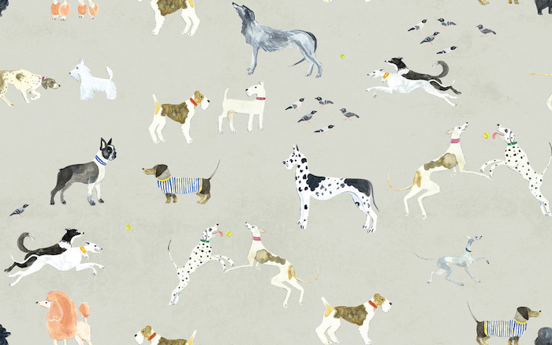

$ ls ./work
My Works
Behold the wondrous realm of data, where a nerdy adventurer (a.k.a me) dares to unlock the secrets hidden in numbers, transforming them into tales that make stakeholders go 'Whoa!', or simply shrug and say 'Eh, close enough!'
001/008
Video Event Retrieval
→ open
002/008
Vietnamese Speaker Recognition
→ open
003/008
Scientific Abstract Classification
→ open

004/008
Dog Breed Prediction
→ open
005/008
Regression Model - Boston
→ open
006/008
New York 311 Analysis
→ open
007/008
Landmark Classification
→ open
008/008
Customer Testimonial Analysis
→ open